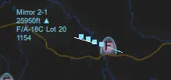
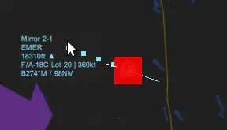
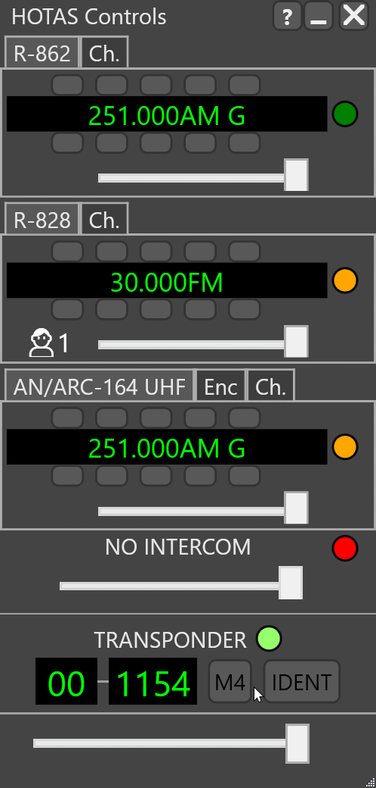

SQUAWK and Mode 3 Transponder Operation
Transponder Codes
Transponder codes are encoded in octal (base 8), and thus only fit the range 0-7. This means any squawk given with an 8 or 9 in it, is invalid and will not be accepted by your transponder.
LotAtc
Labels

%(transponder) can be added to label html to display the current transponder. You can select only the mode 3 portion of the transponder code by using %(transponder|mode3).
Example HTML with Transponder Mode 3:
%(name|10)
%(transponder|mode3)
%(alti_short) %(type)
IDENT
A controller or C2 may elect to ask for a pilot to IDENT, which will highlight them with a flashing red border in LotAtc. This can be useful for doing checkins/alpha checks, as it highlights the aircraft's position without having to find them in the object menu, or look for their alpha check manually.
Emergency Codes
When squawking 7700 or 7600, the relevant aircraft will be highlighted by a red block which flashes periodically.

Their mode 3 transponder label will also read EMER if 7700 or RDO if 7600 is selected by the pilot.
F14 Tomcat
Mode 3 Transponder
- Enter the RIO cockpit and locate the IFF control panel.
- Set the
MODE 4to on. - Input your designated/desired squawk using the rollers under
MODE 1andMODE 3/A.
IFF MODE 4 ..... ON
IFF MODE 3/A ..... CODE
IDENT
- Enter the RIO cockpint and locate the IFF control panel.
- Set
IDENTswitch on with left click.
IFF IDENT ..... ON
F16C Viper
Mode 3 Transponder

Note
The Viper does not differentiate between mode 1 and 3 within the cockpit. You will use both the mode 1 and 3 section to input your mode 3 squawk (4 digits).
- Switch the
IFF Master Knobto NORM - Input your designated/desired squawk using the rollers under Mode 1 and Mode 3.
IFF MASTER KNOB ..... NORM
IFF Mode 1/3 Selector ..... CODE
IDENT

- Press the
IFF IDENTbutton located on the left side dash.
IFF MASTER KNOB ..... NORM
IFF IDENT ..... PRESS
F/A 18C Hornet
Mode 3 Transponder

- Press the
IFFbutton on the UFC. - Press the
On/Offswitch on the UFC if you do not see the mode options populated. - Press the
3 Coption button on the UFC, to select the mode 3 configuration for editing. - Input your designated or desired SQUAWK.
- Press
ENT.
IFF ..... ON
Mode 3C ..... ON
Mode 3C ..... CODE
IDENT

- Press the
I/Ppushbutton on the UFC.
You do not need to hold this down for operation.
IFF ..... ON
Mode 3C ..... ON
I/P Pushbutton ..... HOLD 1 SECOND
Mirage F1
Mode 3 Transponder

- Locate the IFF control panel.
- Set the IFF Master knob to standby.
- Enter your SQUAWK into the Mode 3A section using the number rollers.
- Set the
Mode 1/2/3A/Cto on. - Set the
Mode 4 "Password" Knobto A or B depending on preference. Default toA. - Set the
Mode 4 Switchto on. - Before taking off, or at ATC request, set the
IFF Masterswitch to on.
During Start:
- IFF Master Knob ..... STBY
- Mode 1 ..... Code
- Mode 3 ..... Code
- Mode 1 / 2 / 3A / C Switch .... ON
- Mode 4 "Password" Knob ..... A / B
- Mode 4 Switch..... ON
Before Takeoff:
IFF Master Knob ..... N
IDENT

- Hold the Position/Identification switch in the up position to IDENT.
Position/Identification Switch .... HOLD UP
SRS Overlay
Mode 3 Transponder Setup


- Show the SRS Radio Overlay before connecting, or alt tab and show it from SRS.
- Click the red dot next to transponder to switch it on. You will need to have electrical power and typically engines started to do this, but it varies per type.
- Input your designated/desired squawk into the section under mode 3, and hit enter to confirm, or deselect the text input.
Transponder ..... ON (GREEN CIRCLE)
Mode 3 ..... CODE
IDENT

- Press the IDENT button (while grey) to IDENT.
- Wait for the controller to either find you and continue relevant procedure, or aknowledge the IDENT.
- Press the IDENT button again (while it is green) to stop IDENT.
Transponder ..... ON
IDENT ..... TOGGLE ON
IDENT ..... TOGGLE OFF